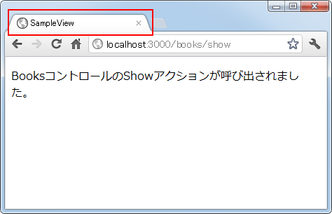
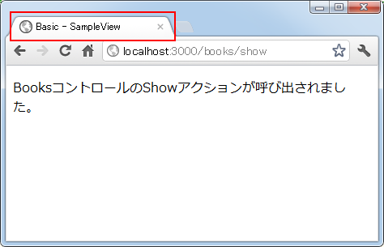
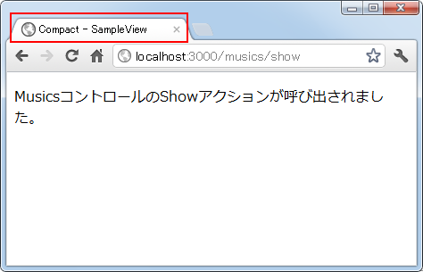
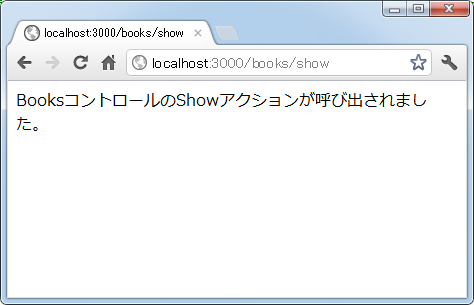
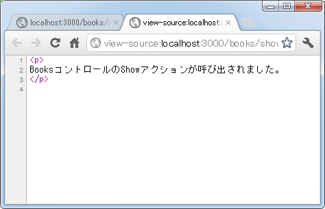
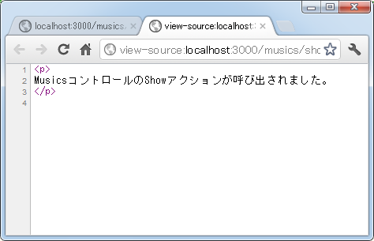

コントローラやアクション毎に使用するレイアウトを切り替える
特に指定しない場合はアプリケーション全体で同じレイアウトテンプレートを使用しますが、コントローラ毎、そしてアクション毎に使用したいレイアウトテンプレートを指定することが可能です。ここではレイアウトを切り替える方法について解説します。
1.コントローラ単位でレイアウトを自動設定
2.コントローラ単位で適用するレイアウトを指定
3.アクション単位で適用するレイアウトを指定
4.レイアウトを無効にして使用しない
コントローラ単位でレイアウトを自動設定
特に指定しなければ「app/views/layouts/application.html.erb」ファイルがアプリケーションに含まれる全てのテンプレートを用レイアウトとして使用されますが、特定のコントローラに含まれるアクションから呼び出されるテンプレートには指定したレイアウトを設定したい場合には「app/views/layouts/コントローラ名.html.erb」というファイルを作成して下さい。
例えば「books」コントロールに含まれるアクションに対するレイアウトを設定する場合には、「app/views/layouts/books.html.erb」を作成しておくと自動的に適用されます。
では実際に試してみます。今回新しく「musics」コントローラを作成します。これで「sample_view」アプリケーションには「books」コントローラと「musics」コントローラの2つがあることになります。それぞれのコントローラの中に「show」アクションを作成しました。
class BooksController < ApplicationController def show end end
class MusicsController < ApplicationController def show end end
それぞれのアクションから呼び出されるテンプレートとして「app/views/books/show.html.erb」ファイルと「app/views/musics/show.html.erb」ファイルを作成し、次のように記述しました。
<p> BooksコントロールのShowアクションが呼び出されました。 </p>
<p> MusicsコントロールのShowアクションが呼び出されました。 </p>
ルーティングの設定として「config/routes.rb」ファイルを次のように記述しました。
SampleView::Application.routes.draw do get "books/show" get "musics/show" end
そしてMusicsコントロール用にレイアウトテンプレートファイルとして「app/views/layouts/musics.html.erb」ファイルを作成し、次のように記述しました。
<!DOCTYPE html>
<html>
<head>
<meta http-equiv="Content-Type" content="text/html;charset=UTF-8" />
<title>Music - SampleView</title>
<%= stylesheet_link_tag "application", :media => "all" %>
<%= javascript_include_tag "application" %>
<%= csrf_meta_tags %>
</head>
<body>
<%= yield %>
</body>
</html>
変更した箇所はアプリケーション全体で適用されるレイアウトではタイトルの部分が「<title>SampleView</title>」となっている部分を「<title>Music - SampleView</title>」のように「Music - 」を追加しています。
ではアプリケーションを起動し、まずは「books」コントロールの「show」アクションを呼び出してみます。すると次のように結果がブラウザに表示されました。

タイトルの部分を見て頂くとアプリケーション全体に適用されるレイアウトが適用されていることが確認できます。では次に「musics」コントロールの「show」アクションを呼び出してみます。すると次のように結果がブラウザに表示されました。
タイトルの部分を見て頂くと「Musics - SampleView」となっており、「musics」コントロール用に用意したレイアウトが自動的に適用されていることが確認できます。このようにコントローラ単位で適用するレイアウトを自動的に設定したい場合は「app/views/layouts/コントローラ名.html.erb」というファイルを用意すればいいことが分かります。
コントローラ単位で適用するレイアウトを指定
指定した複数のコントローラで同じレイアウトを適用したい場合、最初に紹介した方法では「app/views/layouts/コントローラ名.html.erb」というファイルをコントローラ毎に用意し、同じ記述をしておく必要があります。そこでこのような場合には任意の名前を付けた「app/views/layouts/任意の名前.html.erb」というレイアウトを用意し、コントローラ毎にどのレイアウトを使用するのかを指定することができます。
コントローラの中で使用するレイアウトを指定するにはlayoutメソッドを使います。書式は次の通りです。
class コントローラ名 < ApplicationController layout 'レイアウトファイル名' def アクション名 end end
レイアウトファイル名には拡張子を除いたファイル名を指定します。例えば「app/views/layouts/basic.html.erb」という名前でファイルを作成したのであれば「layout 'basic'」と指定します。
では実際に試してみます。新しく「app/views/layouts/basic.html.erb」というファイルを作成し次のように記述しました。
<!DOCTYPE html>
<html>
<head>
<meta http-equiv="Content-Type" content="text/html;charset=UTF-8" />
<title>Basic - SampleView</title>
<%= stylesheet_link_tag "application", :media => "all" %>
<%= javascript_include_tag "application" %>
<%= csrf_meta_tags %>
</head>
<body>
<%= yield %>
</body>
</html>
変更した箇所はアプリケーション全体で適用されるレイアウトではタイトルの部分が「<title>SampleView</title>」となっている部分を「<title>Basic - SampleView</title>」のように「Basic - 」を追加しています。
そして「books」コントローラと「musics」コントローラをそれぞれ次のように変更しました。
class BooksController < ApplicationController layout 'basic' def show end end
class MusicsController < ApplicationController layout 'basic' def show end end
ではアプリケーションを起動し、まずは「books」コントロールの「show」アクションを呼び出してみます。すると次のように結果がブラウザに表示されました。

タイトルの部分を見て頂くとlayoutメソッドを使って指定したレイアウトが適用されていることが確認できます。では次に「musics」コントロールの「show」アクションを呼び出してみます。すると次のように結果がブラウザに表示されました。
こちらも同じくlayoutメソッドを使って指定したレイアウトが適用されています。「musics」コントロール用には「app/views/layouts/musics.html.erb」というファイルも作成してあったのですが、layoutメソッドを使って指定したレイアウトの方が優先されて適用されたようです。
アクション単位で適用するレイアウトを指定
ここまではコントローラ単位で適用するレイアウトを指定してきましたが、アクション単位で指定することも可能です。アクション単位で使用するレイアウトを指定するにはrenderメソッドを使います。書式は次の通りです。
class コントローラ名 < ApplicationController
def アクション名
render :layout => 'レイアウトファイル名'
end
end
レイアウトファイル名には拡張子を除いたファイル名を指定します。例えば「app/views/layouts/compact.html.erb」という名前でファイルを作成したのであれば「render :layout => 'compact'」と指定します。
では実際に試してみます。新しく「app/views/layouts/compact.html.erb」というファイルを作成し次のように記述しました。
<!DOCTYPE html>
<html>
<head>
<meta http-equiv="Content-Type" content="text/html;charset=UTF-8" />
<title>Compact - SampleView</title>
<%= stylesheet_link_tag "application", :media => "all" %>
<%= javascript_include_tag "application" %>
<%= csrf_meta_tags %>
</head>
<body>
<%= yield %>
</body>
</html>
変更した箇所はアプリケーション全体で適用されるレイアウトではタイトルの部分が「<title>SampleView</title>」となっている部分を「<title>Compact - SampleView</title>」のように「Compact - 」を追加しています。
そして「musics」コントローラを次のように変更しました。
class MusicsController < ApplicationController
layout 'basic'
def show
render :layout => 'compact'
end
end
ではアプリケーションを起動し、「musics」コントロールの「show」アクションを呼び出してみます。すると次のように結果がブラウザに表示されました。

タイトルの部分を見て頂くとrenderメソッドを使って指定したレイアウトが適用されていることが確認できます。「musics」コントロール用には「app/views/layouts/musics.html.erb」というファイルも作成してあり、またlayoutメソッドを使ってコントローラで適用されるレイアウトも指定してありましたが、renderメソッドを使って指定したレイアウトの方が優先されて適用されたようです。
レイアウトを無効にして使用しない
レイアウトを無効にして使用しないように設定することも可能です。その場合は、アクションから呼び出されるテンプレートで作成されたHTMLだけが利用者へ返されることになります。レイアウトを無効にするにはrenderメソッドを使って次のように記述します。
class コントローラ名 < ApplicationController
def アクション名
render :layout => false
end
end
レイアウトファイル名を指定する代わりに「false」を指定して下さい。またコントローラ単位で無効にしたい場合は次のように記述することもできます。
class コントローラ名 < ApplicationController layout false def アクション名 end end
レイアウトファイル名を指定する代わりに「false」を指定して下さい。
では実際に試してみます。「books」コントローラと「musics」コントローラをそれぞれ次のように変更しました。
class BooksController < ApplicationController layout false def show end end
class MusicsController < ApplicationController
def show
render :layout => false
end
end
ではアプリケーションを起動し、まずは「books」コントロールの「show」アクションを呼び出してみます。すると次のように結果がブラウザに表示されました。

ソースを確認するとレイアウトが適用されておらずテンプレートで作成されたHTMLだけが返ってきていることが確認できます。

では次に「musics」コントロールの「show」アクションを呼び出してみます。そして同じようにソースを確認してみます。

こちらも同じようにレイアウトが適用されていないことが確認できます。このようにレイアウトそのものを無効にして適用されないように設定することが可能です。
( Written by Tatsuo Ikura )

著者 / TATSUO IKURA
初心者～中級者の方を対象としたプログラミング方法や開発環境の構築の解説を行うサイトの運営を行っています。